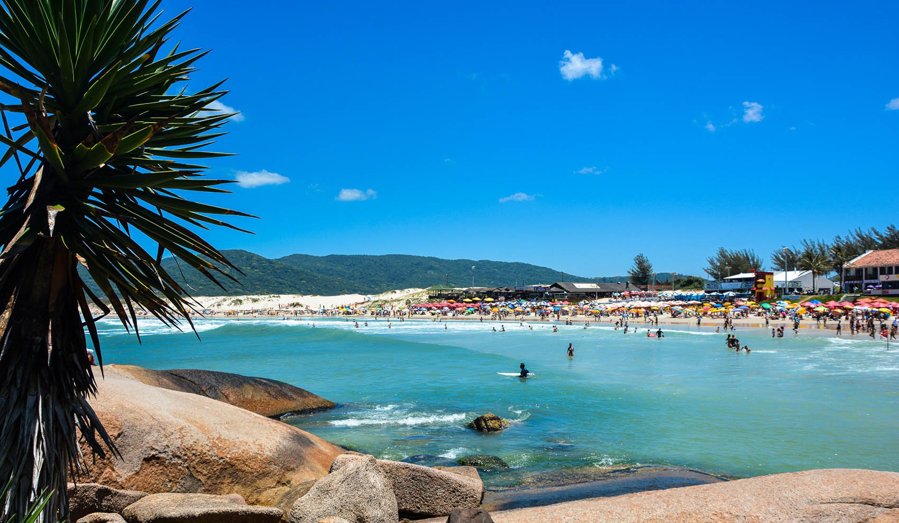
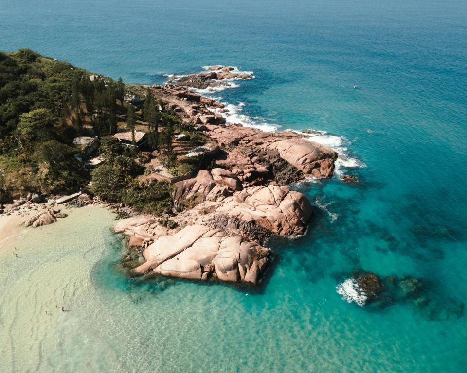
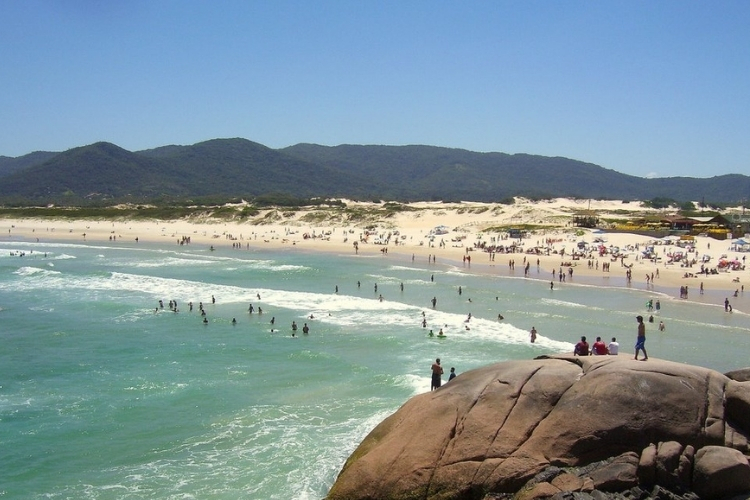
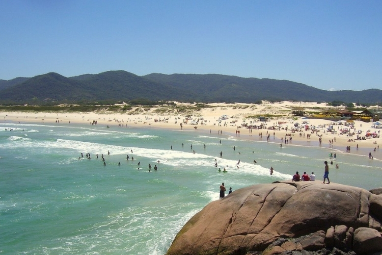
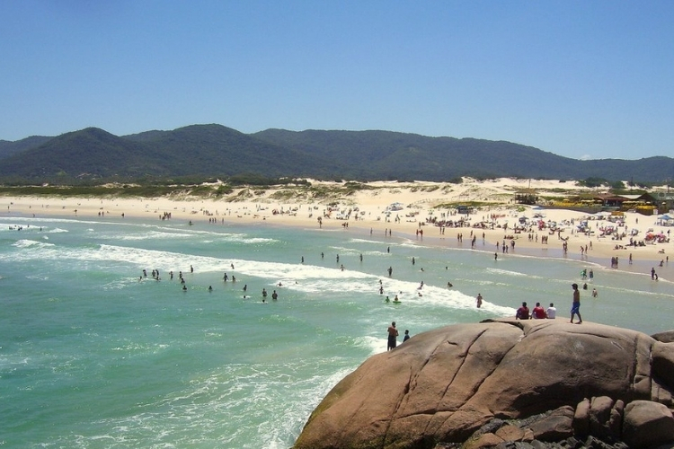

 


Como chegar á Joaquina
A melhor forma de chegar à Praia da Joaquina em Florianópolis é de carro ou de transporte público. De carro, é possível acessá-la pela SC-406 ou pela Avenida das Rendeiras. De transporte público, pode-se pegar um ônibus da linha 330 ou 360, que passam pela praia. É importante lembrar que a praia pode ficar bastante movimentada em dias de grande fluxo de turistas.
Sobre a Joaca
A Praia da Joaquina em Florianópolis é conhecida por suas ondas fortes e extenso dunas de areia. É um destino popular para surfistas, praticantes de sandboard e para aqueles que buscam um ambiente descontraído e jovial. A praia também conta com boa infraestrutura, incluindo quiosques, bares e restaurantes.